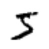

import torch, os, math
import torchvision as tv
import torchvision.transforms.functional as tvf
from torchvision import io
import matplotlib.pyplot as plt
from torch.utils.cpp_extension import load_inlineCUDA
Getting started with CUDA
Setup
img = io.read_image('puppy.jpg')
print(img.shape)
img[:2,:3,:4]torch.Size([3, 1330, 1920])tensor([[[225, 225, 225, 225],
[225, 225, 225, 225],
[225, 225, 225, 225]],
[[228, 228, 228, 228],
[228, 228, 228, 228],
[228, 228, 228, 228]]], dtype=torch.uint8)def show_img(x, figsize=(4,3), **kwargs):
plt.figure(figsize=figsize)
plt.axis('off')
if len(x.shape)==3: x = x.permute(1,2,0) # CHW -> HWC
plt.imshow(x.cpu(), **kwargs)img2 = tvf.resize(img, 150, antialias=True)
ch,h,w = img2.shape
ch,h,w,h*w(3, 150, 216, 32400)show_img(img2)RGB -> Grey
Basic Python
def rgb2grey_py(x):
c,h,w = x.shape
n = h*w
x = x.flatten()
res = torch.empty(n, dtype=x.dtype, device=x.device)
for i in range(n): res[i] = 0.2989*x[i] + 0.5870*x[i+n] + 0.1140*x[i+2*n]
return res.view(h,w)img_g = rgb2grey_py(img2)CPU times: user 1.59 s, sys: 27.1 ms, total: 1.61 s
Wall time: 1.11 sshow_img(img_g, cmap='gray')
Python Kernel
def run_kernel(f, times, *args):
for i in range(times): f(i, *args)NB: A kernel can not return anything. It can only change contents of things passed to it.
def rgb2grey_k(i, x, out, n):
out[i] = 0.2989*x[i] + 0.5870*x[i+n] + 0.1140*x[i+2*n]def rgb2grey_pyk(x):
c,h,w = x.shape
n = h*w
x = x.flatten()
res = torch.empty(n, dtype=x.dtype, device=x.device)
run_kernel(rgb2grey_k, h*w, x, res, n)
return res.view(h,w)img_g = rgb2grey_pyk(img2)CPU times: user 1.06 s, sys: 0 ns, total: 1.06 s
Wall time: 1.06 sshow_img(img_g, cmap='gray')
Python Block Kernel
- Streaming Multiprocessors (SMs): In NVIDIA GPUs, SMs are the fundamental units of execution. Each SM can execute multiple threads concurrently.
- Thread Blocks: A thread block is a group of threads that can cooperate among themselves through shared memory and synchronization. All threads in a block are executed on the same SM. This means they can share resources such as shared memory and can synchronize their execution with each other.
- Shared Memory: Shared memory is a small memory space on the GPU that is shared among the threads in a block. It is much faster than global memory (the main GPU memory), but it is also limited in size. Threads in the same block can use shared memory to share data with each other efficiently.
- The RTX 3090, based on the Ampere architecture, has 82 SMs.
- Each SM in GA10x GPUs contain 128 CUDA Cores, four third-generation Tensor Cores, a 256 KB Register File, and 128 KB of L1/Shared Memory
- In CUDA, all threads in a block have the potential to run concurrently. However, the actual concurrency depends on the number of CUDA cores per SM and the resources required by the threads.
128*8210496def blk_kernel(f, blocks, threads, *args):
for i in range(blocks):
for j in range(threads): f(i, j, threads, *args)def rgb2grey_bk(blockidx, threadidx, blockdim, x, out, n):
i = blockidx*blockdim + threadidx
if i<n: out[i] = 0.2989*x[i] + 0.5870*x[i+n] + 0.1140*x[i+2*n]def rgb2grey_pybk(x):
c,h,w = x.shape
n = h*w
x = x.flatten()
res = torch.empty(n, dtype=x.dtype, device=x.device)
threads = 256
blocks = int(math.ceil(h*w/threads))
blk_kernel(rgb2grey_bk, blocks, threads, x, res, n)
return res.view(h,w)img_g = rgb2grey_pybk(img2)CPU times: user 1.1 s, sys: 0 ns, total: 1.1 s
Wall time: 1.1 sshow_img(img_g, cmap='gray')CUDA Setup
os.environ['CUDA_LAUNCH_BLOCKING']='1'os.environ['CUDA_HOME']='/usr/local/cuda'def load_cuda(cuda_src, cpp_src, funcs, opt=False, verbose=False):
return load_inline(cuda_sources=[cuda_src], cpp_sources=[cpp_src], functions=funcs,
extra_cuda_cflags=["-O2"] if opt else [], verbose=verbose, name="inline_ext")cuda_begin = r'''
#include <torch/extension.h>
#include <stdio.h>
#include <c10/cuda/CUDAException.h>
#define CHECK_CUDA(x) TORCH_CHECK(x.device().is_cuda(), #x " must be a CUDA tensor")
#define CHECK_CONTIGUOUS(x) TORCH_CHECK(x.is_contiguous(), #x " must be contiguous")
#define CHECK_INPUT(x) CHECK_CUDA(x); CHECK_CONTIGUOUS(x)
inline unsigned int cdiv(unsigned int a, unsigned int b) { return (a + b - 1) / b;}
'''CUDA kernel
- 2^31 max blocks for dim 0, 2^16 max for dims 1 & 2
- 1024 max threads per block (use a multiple of 32)

cuda_src = cuda_begin + r'''
__global__ void rgb_to_grayscale_kernel(unsigned char* x, unsigned char* out, int n) {
int i = blockIdx.x*blockDim.x + threadIdx.x;
if (i<n) out[i] = 0.2989*x[i] + 0.5870*x[i+n] + 0.1140*x[i+2*n];
}
torch::Tensor rgb_to_grayscale(torch::Tensor input) {
CHECK_INPUT(input);
int h = input.size(1);
int w = input.size(2);
printf("h*w: %d*%d\n", h, w);
auto output = torch::empty({h,w}, input.options());
int threads = 256;
rgb_to_grayscale_kernel<<<cdiv(w*h,threads), threads>>>(
input.data_ptr<unsigned char>(), output.data_ptr<unsigned char>(), w*h);
C10_CUDA_KERNEL_LAUNCH_CHECK();
return output;
}'''cpp_src = "torch::Tensor rgb_to_grayscale(torch::Tensor input);"module = load_cuda(cuda_src, cpp_src, ['rgb_to_grayscale'], verbose=True)Using /home/ben/.cache/torch_extensions/py311_cu118 as PyTorch extensions root...
No modifications detected for re-loaded extension module inline_ext, skipping build step...
Loading extension module inline_ext...--------------------------------------------------------------------------- ImportError Traceback (most recent call last) Cell In[33], line 1 ----> 1 module = load_cuda(cuda_src, cpp_src, ['rgb_to_grayscale'], verbose=True) Cell In[29], line 2, in load_cuda(cuda_src, cpp_src, funcs, opt, verbose) 1 def load_cuda(cuda_src, cpp_src, funcs, opt=False, verbose=False): ----> 2 return load_inline(cuda_sources=[cuda_src], cpp_sources=[cpp_src], functions=funcs, 3 extra_cuda_cflags=["-O2"] if opt else [], verbose=verbose, name="inline_ext") File ~/mambaforge/envs/cfast/lib/python3.11/site-packages/torch/utils/cpp_extension.py:1434, in load_inline(name, cpp_sources, cuda_sources, functions, extra_cflags, extra_cuda_cflags, extra_ldflags, extra_include_paths, build_directory, verbose, with_cuda, is_python_module, with_pytorch_error_handling, keep_intermediates) 1430 cuda_source_file.write('\n'.join(cuda_sources)) 1432 sources.append(cuda_source_path) -> 1434 return _jit_compile( 1435 name, 1436 sources, 1437 extra_cflags, 1438 extra_cuda_cflags, 1439 extra_ldflags, 1440 extra_include_paths, 1441 build_directory, 1442 verbose, 1443 with_cuda, 1444 is_python_module, 1445 is_standalone=False, 1446 keep_intermediates=keep_intermediates) File ~/mambaforge/envs/cfast/lib/python3.11/site-packages/torch/utils/cpp_extension.py:1535, in _jit_compile(name, sources, extra_cflags, extra_cuda_cflags, extra_ldflags, extra_include_paths, build_directory, verbose, with_cuda, is_python_module, is_standalone, keep_intermediates) 1532 if is_standalone: 1533 return _get_exec_path(name, build_directory) -> 1535 return _import_module_from_library(name, build_directory, is_python_module) File ~/mambaforge/envs/cfast/lib/python3.11/site-packages/torch/utils/cpp_extension.py:1929, in _import_module_from_library(module_name, path, is_python_module) 1927 spec = importlib.util.spec_from_file_location(module_name, filepath) 1928 assert spec is not None -> 1929 module = importlib.util.module_from_spec(spec) 1930 assert isinstance(spec.loader, importlib.abc.Loader) 1931 spec.loader.exec_module(module) File <frozen importlib._bootstrap>:573, in module_from_spec(spec) File <frozen importlib._bootstrap_external>:1233, in create_module(self, spec) File <frozen importlib._bootstrap>:241, in _call_with_frames_removed(f, *args, **kwds) ImportError: /home/ben/.cache/torch_extensions/py311_cu118/inline_ext/inline_ext.so: cannot open shared object file: No such file or directory
[o for o in dir(module) if o[0]!='_']imgc = img.contiguous().cuda()res = module.rgb_to_grayscale(imgc).cpu()
h,w = res.shape
h,w,h*wshow_img(res, cmap='gray')Matmul
Get data
import gzip,pickle
from urllib.request import urlretrieve
from pathlib import Path
from torch import tensorMNIST_URL='https://github.com/mnielsen/neural-networks-and-deep-learning/blob/master/data/mnist.pkl.gz?raw=true'
path_data = Path('data')
path_data.mkdir(exist_ok=True)
path_gz = path_data/'mnist.pkl.gz'
if not path_gz.exists(): urlretrieve(MNIST_URL, path_gz)with gzip.open(path_gz, 'rb') as f: ((x_train, y_train), (x_valid, y_valid), _) = pickle.load(f, encoding='latin-1')
x_train,y_train,x_valid,y_valid = map(tensor, (x_train,y_train,x_valid,y_valid))
x_train.shape,x_train.type()(torch.Size([50000, 784]), 'torch.FloatTensor')imgs = x_train.reshape((-1,28,28))
imgs.shapetorch.Size([50000, 28, 28])show_img(imgs[0], cmap='gray_r', figsize=(1,1))
torch.manual_seed(1)
weights = torch.randn(784,10)
weightstensor([[-1.5256, -0.7502, -0.6540, ..., -1.6091, -0.7121, 0.3037],
[-0.7773, -0.2515, -0.2223, ..., -1.1608, 0.6995, 0.1991],
[ 0.8657, 0.2444, -0.6629, ..., -1.4465, 0.0612, -0.6177],
...,
[ 0.5063, 0.4656, -0.2634, ..., 0.6452, 0.4298, -1.2936],
[ 0.5171, 1.0315, 0.8120, ..., -0.1046, 2.2588, -0.2793],
[-1.4899, 0.3898, -0.5454, ..., -0.1923, -0.5076, 0.5439]])Python matmul
m1 = x_valid[:5]
m2 = weights
m1.shape,m2.shape(torch.Size([5, 784]), torch.Size([784, 10]))ar,ac = m1.shape # n_rows * n_cols
br,bc = m2.shape
(ar,ac),(br,bc)((5, 784), (784, 10))t1 = torch.zeros(ar, bc)
t1.shapetorch.Size([5, 10])for i in range(ar): # 5
for j in range(bc): # 10
for k in range(ac): # 784
t1[i,j] += m1[i,k] * m2[k,j]t1.shapetorch.Size([5, 10])import numpy as np
np.set_printoptions(precision=2, linewidth=140)
torch.set_printoptions(precision=2, linewidth=140, sci_mode=False)t1tensor([[-10.94, -0.68, -7.00, -4.01, -2.09, -3.36, 3.91, -3.44, -11.47, -2.12],
[ 14.54, 6.00, 2.89, -4.08, 6.59, -14.74, -9.28, 2.16, -15.28, -2.68],
[ 2.22, -3.22, -4.80, -6.05, 14.17, -8.98, -4.79, -5.44, -20.68, 13.57],
[ -6.71, 8.90, -7.46, -7.90, 2.70, -4.73, -11.03, -12.98, -6.44, 3.64],
[ -2.44, -6.40, -2.40, -9.04, 11.18, -5.77, -8.92, -3.79, -8.98, 5.28]])def matmul(a,b):
(ar,ac),(br,bc) = a.shape,b.shape
c = torch.zeros(ar, bc)
for i in range(ar):
for j in range(bc):
for k in range(ac): c[i,j] += a[i,k] * b[k,j]
return cCPU times: user 603 ms, sys: 0 ns, total: 603 ms
Wall time: 603 msar*bc*ac392002d Python kernel
from types import SimpleNamespace as nsdef blk_kernel2d(f, blocks, threads, *args):
for i0 in range(blocks.y):
for i1 in range(blocks.x):
for j0 in range(threads.y):
for j1 in range(threads.x): f(ns(x=i1,y=i0), ns(x=j1,y=j0), threads, *args)def matmul_bk(blockidx, threadidx, blockdim, m, n, out, h, w, k):
r = blockidx.y*blockdim.y + threadidx.y
c = blockidx.x*blockdim.x + threadidx.x
if (r>=h or c>=w): return
o = 0.
for i in range(k): o += m[r*k+i] * n[i*w+c]
out[r*w+c] = odef matmul_2d(m, n):
h,k = m.shape
k2,w = n.shape
assert k==k2, "Size mismatch!"
output = torch.zeros(h, w, dtype=m.dtype)
tpb = ns(x=16,y=16)
blocks = ns(x=math.ceil(w/tpb.x), y=math.ceil(h/tpb.y))
blk_kernel2d(matmul_bk, blocks, tpb,
m.flatten(), n.flatten(), output.flatten(), h, w, k)
return outputres = matmul_2d(m1, m2)
torch.isclose(t1, res).all()tensor(True)Broadcasting
def matmul(a,b):
(ar,ac),(br,bc) = a.shape,b.shape
c = torch.zeros(ar, bc)
for i in range(ar): c[i] = (a[i,:,None] * b).sum(dim=0)
return ctorch.isclose(t1,matmul(m1, m2)).all()tensor(True)CPU times: user 1.84 ms, sys: 286 µs, total: 2.13 ms
Wall time: 1.79 msm1 = x_train
tr = matmul(m1, m2)
tr.shapetorch.Size([50000, 10])CPU times: user 2.33 s, sys: 11.2 ms, total: 2.34 s
Wall time: 1.32 sar,ac = m1.shape
br,bc = m2.shape
ar*bc*ac392000000CUDA matmul
cuda_src = cuda_begin + r'''
__global__ void matmul_k(float* m, float* n, float* out, int h, int w, int k) {
int r = blockIdx.y*blockDim.y + threadIdx.y;
int c = blockIdx.x*blockDim.x + threadIdx.x;
if (r>=h || c>=w) return;
float o = 0;
for (int i = 0; i<k; ++i) o += m[r*k+i] * n[i*w+c];
out[r*w+c] = o;
}
torch::Tensor matmul(torch::Tensor m, torch::Tensor n) {
CHECK_INPUT(m); CHECK_INPUT(n);
int h = m.size(0);
int w = n.size(1);
int k = m.size(1);
TORCH_CHECK(k==n.size(0), "Size mismatch!");
auto output = torch::zeros({h, w}, m.options());
dim3 tpb(16,16);
dim3 blocks(cdiv(w, tpb.x), cdiv(h, tpb.y));
matmul_k<<<blocks, tpb>>>(
m.data_ptr<float>(), n.data_ptr<float>(), output.data_ptr<float>(), h, w, k);
C10_CUDA_KERNEL_LAUNCH_CHECK();
return output;
}
'''cpp_src = "torch::Tensor matmul(torch::Tensor m, torch::Tensor n);"module = load_cuda(cuda_src, cpp_src, ['matmul'])--------------------------------------------------------------------------- OSError Traceback (most recent call last) Cell In[63], line 1 ----> 1 module = load_cuda(cuda_src, cpp_src, ['matmul']) Cell In[29], line 2, in load_cuda(cuda_src, cpp_src, funcs, opt, verbose) 1 def load_cuda(cuda_src, cpp_src, funcs, opt=False, verbose=False): ----> 2 return load_inline(cuda_sources=[cuda_src], cpp_sources=[cpp_src], functions=funcs, 3 extra_cuda_cflags=["-O2"] if opt else [], verbose=verbose, name="inline_ext") File ~/mambaforge/envs/cfast/lib/python3.11/site-packages/torch/utils/cpp_extension.py:1434, in load_inline(name, cpp_sources, cuda_sources, functions, extra_cflags, extra_cuda_cflags, extra_ldflags, extra_include_paths, build_directory, verbose, with_cuda, is_python_module, with_pytorch_error_handling, keep_intermediates) 1430 cuda_source_file.write('\n'.join(cuda_sources)) 1432 sources.append(cuda_source_path) -> 1434 return _jit_compile( 1435 name, 1436 sources, 1437 extra_cflags, 1438 extra_cuda_cflags, 1439 extra_ldflags, 1440 extra_include_paths, 1441 build_directory, 1442 verbose, 1443 with_cuda, 1444 is_python_module, 1445 is_standalone=False, 1446 keep_intermediates=keep_intermediates) File ~/mambaforge/envs/cfast/lib/python3.11/site-packages/torch/utils/cpp_extension.py:1509, in _jit_compile(name, sources, extra_cflags, extra_cuda_cflags, extra_ldflags, extra_include_paths, build_directory, verbose, with_cuda, is_python_module, is_standalone, keep_intermediates) 1505 hipified_sources.add(hipify_result[s_abs]["hipified_path"] if s_abs in hipify_result else s_abs) 1507 sources = list(hipified_sources) -> 1509 _write_ninja_file_and_build_library( 1510 name=name, 1511 sources=sources, 1512 extra_cflags=extra_cflags or [], 1513 extra_cuda_cflags=extra_cuda_cflags or [], 1514 extra_ldflags=extra_ldflags or [], 1515 extra_include_paths=extra_include_paths or [], 1516 build_directory=build_directory, 1517 verbose=verbose, 1518 with_cuda=with_cuda, 1519 is_standalone=is_standalone) 1520 finally: 1521 baton.release() File ~/mambaforge/envs/cfast/lib/python3.11/site-packages/torch/utils/cpp_extension.py:1601, in _write_ninja_file_and_build_library(name, sources, extra_cflags, extra_cuda_cflags, extra_ldflags, extra_include_paths, build_directory, verbose, with_cuda, is_standalone) 1599 if with_cuda is None: 1600 with_cuda = any(map(_is_cuda_file, sources)) -> 1601 extra_ldflags = _prepare_ldflags( 1602 extra_ldflags or [], 1603 with_cuda, 1604 verbose, 1605 is_standalone) 1606 build_file_path = os.path.join(build_directory, 'build.ninja') 1607 if verbose: File ~/mambaforge/envs/cfast/lib/python3.11/site-packages/torch/utils/cpp_extension.py:1699, in _prepare_ldflags(extra_ldflags, with_cuda, verbose, is_standalone) 1697 extra_ldflags.append(f'/LIBPATH:{os.path.join(CUDNN_HOME, "lib", "x64")}') 1698 elif not IS_HIP_EXTENSION: -> 1699 extra_ldflags.append(f'-L{_join_cuda_home("lib64")}') 1700 extra_ldflags.append('-lcudart') 1701 if CUDNN_HOME is not None: File ~/mambaforge/envs/cfast/lib/python3.11/site-packages/torch/utils/cpp_extension.py:2223, in _join_cuda_home(*paths) 2216 r''' 2217 Joins paths with CUDA_HOME, or raises an error if it CUDA_HOME is not set. 2218 2219 This is basically a lazy way of raising an error for missing $CUDA_HOME 2220 only once we need to get any CUDA-specific path. 2221 ''' 2222 if CUDA_HOME is None: -> 2223 raise EnvironmentError('CUDA_HOME environment variable is not set. ' 2224 'Please set it to your CUDA install root.') 2225 return os.path.join(CUDA_HOME, *paths) OSError: CUDA_HOME environment variable is not set. Please set it to your CUDA install root.
m1c,m2c = m1.contiguous().cuda(), m2.contiguous().cuda()torch.isclose(tr,module.matmul(m1c, m2c).cpu(), atol=1e-5).all()--------------------------------------------------------------------------- NameError Traceback (most recent call last) Cell In[66], line 1 ----> 1 torch.isclose(tr,module.matmul(m1c, m2c).cpu(), atol=1e-5).all() NameError: name 'module' is not defined
res=module.matmul(m1c, m2c).cpu()
res.shape--------------------------------------------------------------------------- NameError Traceback (most recent call last) File <timed exec>:1 NameError: name 'module' is not defined
Pytorch
torch.isclose(tr,(m1c@m2c).cpu(), atol=1e-5).all()tensor(True)The slowest run took 11.09 times longer than the fastest. This could mean that an intermediate result is being cached.
5.98 ms ± 7.14 ms per loop (mean ± std. dev. of 7 runs, 10 loops each)RGB->Grey CUDA 3d
cuda_src = cuda_begin + r'''
__global__ void rgb_to_grayscale_kernel(unsigned char* x, unsigned char* out, int w, int h) {
int c = blockIdx.x*blockDim.x + threadIdx.x;
int r = blockIdx.y*blockDim.y + threadIdx.y;
if (c<w && r<h) {
int i = r*w + c;
int n = h*w;
out[i] = 0.2989*x[i] + 0.5870*x[i+n] + 0.1140*x[i+2*n];
}
}
torch::Tensor rgb_to_grayscale(torch::Tensor input) {
CHECK_INPUT(input);
int h = input.size(1);
int w = input.size(2);
torch::Tensor output = torch::empty({h,w}, input.options());
dim3 tpb(16,16);
dim3 blocks(cdiv(w, tpb.x), cdiv(h, tpb.y));
rgb_to_grayscale_kernel<<<blocks, tpb>>>(
input.data_ptr<unsigned char>(), output.data_ptr<unsigned char>(), w, h);
C10_CUDA_KERNEL_LAUNCH_CHECK();
return output;
}'''module = load_cuda(cuda_src, cpp_src, ['rgb_to_grayscale'])--------------------------------------------------------------------------- OSError Traceback (most recent call last) Cell In[71], line 1 ----> 1 module = load_cuda(cuda_src, cpp_src, ['rgb_to_grayscale']) Cell In[29], line 2, in load_cuda(cuda_src, cpp_src, funcs, opt, verbose) 1 def load_cuda(cuda_src, cpp_src, funcs, opt=False, verbose=False): ----> 2 return load_inline(cuda_sources=[cuda_src], cpp_sources=[cpp_src], functions=funcs, 3 extra_cuda_cflags=["-O2"] if opt else [], verbose=verbose, name="inline_ext") File ~/mambaforge/envs/cfast/lib/python3.11/site-packages/torch/utils/cpp_extension.py:1434, in load_inline(name, cpp_sources, cuda_sources, functions, extra_cflags, extra_cuda_cflags, extra_ldflags, extra_include_paths, build_directory, verbose, with_cuda, is_python_module, with_pytorch_error_handling, keep_intermediates) 1430 cuda_source_file.write('\n'.join(cuda_sources)) 1432 sources.append(cuda_source_path) -> 1434 return _jit_compile( 1435 name, 1436 sources, 1437 extra_cflags, 1438 extra_cuda_cflags, 1439 extra_ldflags, 1440 extra_include_paths, 1441 build_directory, 1442 verbose, 1443 with_cuda, 1444 is_python_module, 1445 is_standalone=False, 1446 keep_intermediates=keep_intermediates) File ~/mambaforge/envs/cfast/lib/python3.11/site-packages/torch/utils/cpp_extension.py:1509, in _jit_compile(name, sources, extra_cflags, extra_cuda_cflags, extra_ldflags, extra_include_paths, build_directory, verbose, with_cuda, is_python_module, is_standalone, keep_intermediates) 1505 hipified_sources.add(hipify_result[s_abs]["hipified_path"] if s_abs in hipify_result else s_abs) 1507 sources = list(hipified_sources) -> 1509 _write_ninja_file_and_build_library( 1510 name=name, 1511 sources=sources, 1512 extra_cflags=extra_cflags or [], 1513 extra_cuda_cflags=extra_cuda_cflags or [], 1514 extra_ldflags=extra_ldflags or [], 1515 extra_include_paths=extra_include_paths or [], 1516 build_directory=build_directory, 1517 verbose=verbose, 1518 with_cuda=with_cuda, 1519 is_standalone=is_standalone) 1520 finally: 1521 baton.release() File ~/mambaforge/envs/cfast/lib/python3.11/site-packages/torch/utils/cpp_extension.py:1601, in _write_ninja_file_and_build_library(name, sources, extra_cflags, extra_cuda_cflags, extra_ldflags, extra_include_paths, build_directory, verbose, with_cuda, is_standalone) 1599 if with_cuda is None: 1600 with_cuda = any(map(_is_cuda_file, sources)) -> 1601 extra_ldflags = _prepare_ldflags( 1602 extra_ldflags or [], 1603 with_cuda, 1604 verbose, 1605 is_standalone) 1606 build_file_path = os.path.join(build_directory, 'build.ninja') 1607 if verbose: File ~/mambaforge/envs/cfast/lib/python3.11/site-packages/torch/utils/cpp_extension.py:1699, in _prepare_ldflags(extra_ldflags, with_cuda, verbose, is_standalone) 1697 extra_ldflags.append(f'/LIBPATH:{os.path.join(CUDNN_HOME, "lib", "x64")}') 1698 elif not IS_HIP_EXTENSION: -> 1699 extra_ldflags.append(f'-L{_join_cuda_home("lib64")}') 1700 extra_ldflags.append('-lcudart') 1701 if CUDNN_HOME is not None: File ~/mambaforge/envs/cfast/lib/python3.11/site-packages/torch/utils/cpp_extension.py:2223, in _join_cuda_home(*paths) 2216 r''' 2217 Joins paths with CUDA_HOME, or raises an error if it CUDA_HOME is not set. 2218 2219 This is basically a lazy way of raising an error for missing $CUDA_HOME 2220 only once we need to get any CUDA-specific path. 2221 ''' 2222 if CUDA_HOME is None: -> 2223 raise EnvironmentError('CUDA_HOME environment variable is not set. ' 2224 'Please set it to your CUDA install root.') 2225 return os.path.join(CUDA_HOME, *paths) OSError: CUDA_HOME environment variable is not set. Please set it to your CUDA install root.
res = module.rgb_to_grayscale(imgc).cpu()
show_img(res, cmap='gray')--------------------------------------------------------------------------- NameError Traceback (most recent call last) Cell In[72], line 1 ----> 1 res = module.rgb_to_grayscale(imgc).cpu() 2 show_img(res, cmap='gray') NameError: name 'module' is not defined